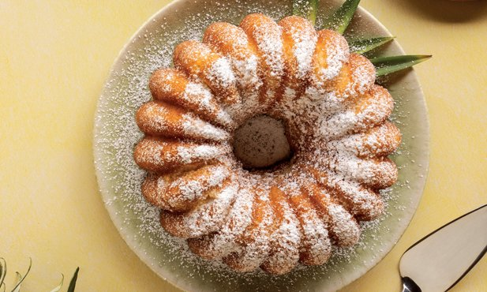

Bolo de abacaxi
- cascas de abacaxi
- água
- ovo M
- açúcar
- manteiga sem sal
- abacaxi
- farinha
- fermento
- açúcar em pó
Na batedeira, coloque o açúcar, a gema do ovo, a margarina e bata até ficar homogêneo. Acrescente a farinha de trigo, o amido de milho, o leite morno, fermento em pó e bata mais um pouco. Reserve. Bata as claras em ponto de neve. Acrescente as claras suavemente na massa batida previamente. Despeje a massa na forma. Leve ao forno preaquecido a 180 graus por 45 minutos. Espere esfriar e desenforme.
Bolo de Fubá

- 1 Xícara de Óleo Comum
- 4 Ovos
- 1 Xícara de Leite Morno;
- 1 Xícara de Farinha de Trigo
- 1 Xícara de Fubá
- 1 Colher de Fermento em Pó
- Manteiga para untar
Coloque no liquidificador o Óleo, Ovos e a Açúcar . Depois de obter uma mistura homogênea, coloque o Leite e bata novamente . Em seguida vá acrescentando a Farinha e o Fubá, lentamente e depois de bater toda a massa coloque o Fermento em Pó . Unte a forma com a manteiga e leve ao forno em 360º , por 35 min. Bom Apetite !
Picada de abelha

- 16 ovos
- 250 gramas de açúcar
- 300 gramas de farinha de trigo
- 100 gramas de manteiga
- 150 mililitros de leite
- 500 mililitros de leite
- 3 gemas
- 2 colheres de amido de milho
- 75 gramas de açúcar
- 1 colher de essência de baunilha
Bata as claras em neve e reserve. Bata as gemas com açúcar e manteiga. Adicione a farinha, o leite e as claras em neve depois o fermento. Despeje a massa em uma forma untada. Coloque a cobertura por cima da massa e asse no forno a 180 graus Célsius, por 20 minutos. Deixar esfriar e recheie com o creme.